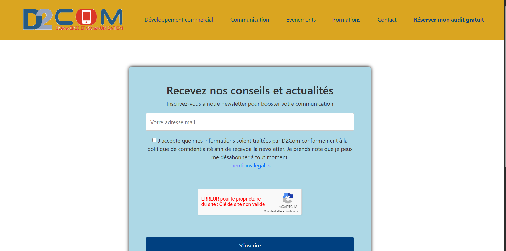
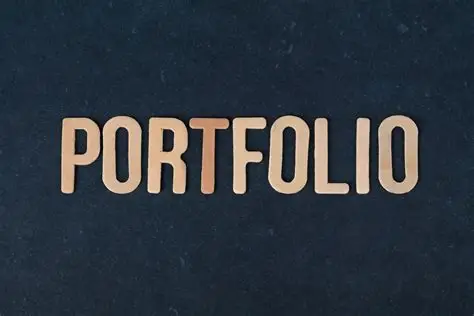

Présentation
Mon parcours
Bienvenue sur mon portfolio. Je suis développeuse passionnée par le web et les technologies modernes.
15 ans dans l'animation, aujourd'hui en reconversion vers le développement informatique via un BTS SIO option SLAM.
Curieuse, je mets à profit mon expérience humaine pour créer des solutions utiles et innovantes.
Formation
- Etudiante BTS SIO 1 - option SLAM - Campus Ermitage (47)
- BPJEPS - Léo Lagrange (31)
- DEA Histoire - Université Bordeaux 3
Campus Ermitage
Expériences professionnelles
- Stage MCIF - Agen
- Stage D2Com - Le Passage
- Directrice périscolaire Clairac
- Directrice adjointe Tonneins
Réalisations

Page de capture email responsive chez D2Com

Création de mon Portfolio
Création site Web EHPAD (en cours)
Compétences
Compétences techniques
Développement Web : HTML, CSS, JavaScript
Framework : Bootstrap
Outils : Git, Github
Compétences transversales
Fiabilité
Autonomie
Rigueur
Veille Technologique
Je réalise une veille technologique régulière pour suivre les évolutions du développement web et des outils numériques. Cette démarche me permet d’anticiper les tendances et d’intégrer des solutions innovantes dans mes projets.